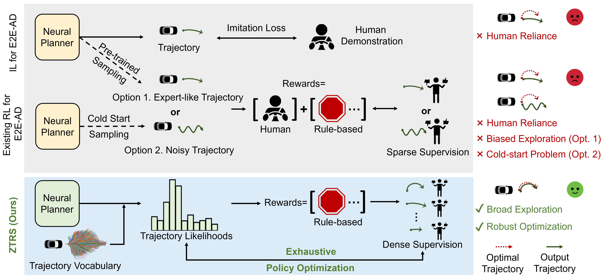
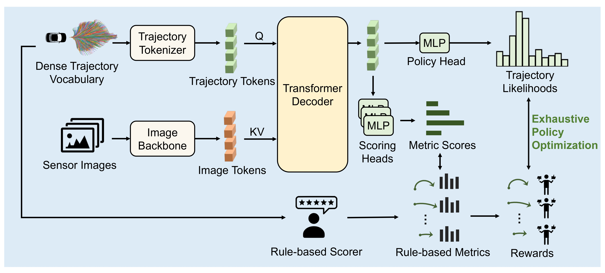

1
Tokenize Sensor Inputs and Trajectories
A frontal-view image backbone extracts image tokens, while a trajectory tokenizer embeds each candidate action from the fixed vocabulary.
Human demonstrations are widely considered the cornerstone of end-to-end (E2E) autonomous driving despite human demonstration's scarcity for long-tail and safety-critical scenarios. Nonetheless, current E2E autonomous driving (AD) training paradigms continue to rely on human demonstrations. Imitation learning (IL) requires human demonstrations for training, whereas reinforcement learning (RL) has emerged as a promising alternative to reduce this dependency. However, most existing RL methods for E2E AD still rely implicitly on human demonstrations. A pure rewards-based RL method can overcome the need for human demonstrations, but general RL policy gradient methods suffer from the cold-start problem.
In this paper, we propose ZTRS (Zero-human demonstration end-to-end autonomous driving with TRajectory Scorer) — a complete RL-based E2E planning paradigm trained solely on real-world images and rule-based rewards, entirely without human demonstration. Through our proposed Exhaustive Policy Optimization (EPO), a policy gradient variant tailored for enumerable trajectory actions and dense supervision, ZTRS enables the model to generalize better to long-tail driving scenarios. We demonstrate this generalization through our SOTA performance against IL approaches on both long-tail Navhard and closed-loop HUGSIM datasets.
End-to-end planners trained with imitation learning inherit the limits of human demonstrations, especially when long-tail and safety-critical behaviors are rare. Existing RL-style approaches reduce this dependency only partially: pretraining still keeps exploration biased towards human trajectories, while training a model from scratch is prone to cold-start failure.

A frontal-view image backbone extracts image tokens, while a trajectory tokenizer embeds each candidate action from the fixed vocabulary.
Transformer decoder layers let trajectory tokens attend to image tokens before policy and scoring heads estimate likelihoods and rule-based metric scores.
EPO evaluates all trajectories for each offline state, avoiding biased exploration and cold-start issues.
The reward signal uses EPDMS-style metrics for safety, progress, comfort, lane keeping, traffic lights, and drivable-area compliance.

On the challenging closed-loop HUGSIM benchmark, ZTRS plans robust trajectories in long-tail, safety-critical interactions without closed-loop training or human demonstrations.
Oncoming traffic: ZTRS keeps a safe path while handling an opposing vehicle in a constrained scene.
Overtaking: ZTRS completes a cautious maneuver around a parked obstacle.
Rogue agent: ZTRS reacts to an aggressive traffic participant and preserves a safer trajectory.
In nominal scenarios, ZTRS follows long-horizon road structure similarly to human trajectories. In complex interactions, it can choose different but safer plans, such as leaving more lateral clearance or decelerating for cut-in behavior.

@article{li2025ztrs,
title={Ztrs: Zero-imitation end-to-end autonomous driving with trajectory scoring},
author={Li, Zhenxin and Yao, Wenhao and Wang, Zi and Sun, Xinglong and Chen, Jingde and Chang, Nadine and Shen, Maying and Song, Jingyu and Wu, Zuxuan and Lan, Shiyi and others},
journal={arXiv preprint arXiv:2510.24108},
year={2025}
}